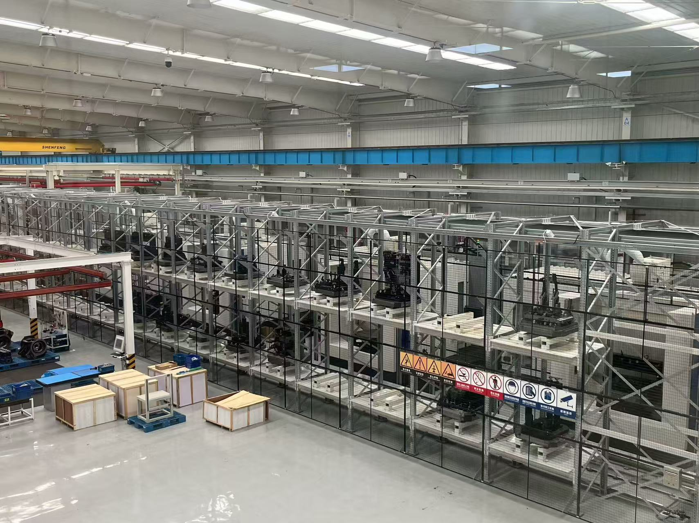
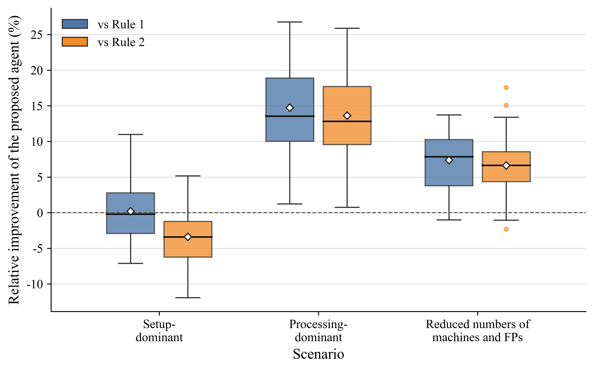

订单变化快
多品种、小批量和短交期，让固定生产计划很快失效。
让制造问题更接近真实工厂，也让调度方法从“计算答案”走向“学习决策”。
上海交通大学 × 米兰理工大学01 · 背景与痛点
托盘自动化系统示例 · 视频来自用户提供的 Fastems 参考资料
多品种、小批量和短交期，让固定生产计划很快失效。
多个工件竞争机器、夹具托盘、设置站和物料托盘。
眼前更快的选择，可能延长资源占用并拖慢整个订单。
真正的瓶颈，是如何把系统的物理柔性转化为生产效率。
02 · 研究对象与难点

兼容选择、同步占用、先后衔接、等待与释放必须同时满足。
机器选择会改变夹具占用；夹具选择也会改变机器等待。
资源和工件增加后，可行组合与决策空间迅速扩大。
03 · 研究现状
根据第五篇论文 “RL applications in FJSP and MRFJSP” 文献表归纳。
04 · 两条研究主线
逐步补齐真实 PAS 中的资源与占用关系。
创新：刻画 FP 从装载、等待、加工到卸载的连续占用。
创新：联合处理装卸任务分配、排队与 FP 释放。
创新：描述 MP 可用性与 FP 释放之间的决策耦合。
从每个实例重新计算，走向可复用、可改进的策略。
建立正确性与最优性基准。
规则初始化结合关键路径搜索。
学习可跨订单复用的联合策略。
用反例持续诊断和精化表示。
05 · AI 研究重点
强化学习
智能体直接选择一个可行的“工序—夹具托盘—机器”组合，并通过仿真回报学习局部效率与长期拥堵之间的权衡。

LLM Agent
LLM 不直接生成最终调度策略。它阅读反事实错例，解释可能缺失的上下文，再把想法编译为可计算特征与实验配置。
定位长期结果明显更差的决策。
提出可计算、无信息泄漏的特征。
不通过预设门槛就拒绝晋级。
新特征即使解决了原来的错误，只要整体性能变差，就不把它包装成成功。
06 · 结论
最终目标：把 PAS 的物理柔性，转化为可信、快速、可迁移的智能调度能力。
07 · 未来展望与下一步
继续反例驱动的特征迭代，完成独立测试、消融实验以及与人工和传统特征工程的公平比较。
进一步把有限设置站、物料托盘、缓存与运输资源纳入统一学习环境。
考虑紧急订单、机器故障、随机加工时间和动态重调度。
面向更大状态空间学习可迁移策略，同时保留可解释性和人的审核边界。